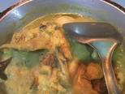
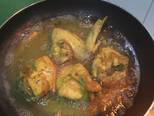

Resep Geprek Sambel Korek
Bahan-bahan:
- 700 gram ayam
- 1 buah jeruk nipis
- 1 sendok teh garam
- 300-400 ml air
Bumbu cemplung
- 2 lembar daun salam
- 2 lembar daun jeruk
Bumbu halus ungkep ayam
- 3 siung bawang putih
- 2 sendok teh ketumbar
- 3 butir kemiri
- 2 cm kunyit
- 2 cm jahe
- 1/2 sendok teh lada bubuk
- secukupnya garam
- secukupnya gula pasir
Bahan Sambal Korek
- 5 cabai rawit
- 5 cabai merah keriting
- 2 siung bawang putih
- 1/2 buah tommat merah
- secukupnya garam
- secukupnya gula pasir
Langkah-langkah:
- Cuci bersih ayam. Kucuri dengan air jeruk nipis dan garam. Remas2 dan diamkan kira2 15 menit.
Ini dilakukan supaya ayam tidak amis nantinya. Setelah itu cuci bersih kembali ayamnya
- Haluskan Bumbu
- masukan dalam wajan bersama ayam
- Beri bumbu cemplung dan air
- Masak kurang lebih 40-45 menit dengan api sedang

- masak hingga ayam matang dan air menyusut
- Goreng ayam dengan minyak panas hingga berwarna golden brown

- cuci bersih bahan sambal
- beri sedikit minyak, lalu tumis bahan sambal hingga layu
- lalu haluskan dan ditaburi sedikit garam dan gula pasir
- ambil nasi, ayam, cocoli sambal, beri lalapan